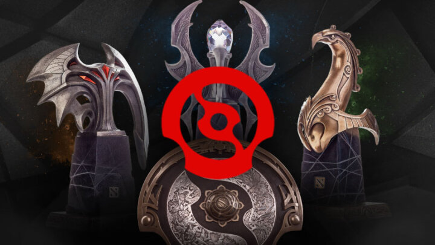

DPC season 2 – What to expect from EU & NA
As the DPC enters the second season, let’s take a look at how EU and NA will shape up.
Like any big international Dota event, the last major was full of surprises. The disappointing performance from the european teams and Evil Geniuses second place finish not being the least of them. Follow this up with some last minute roster changes, and we might see a very different second DPC season in the west.
European Depression
It seems that the quick exits from Team Liquid, Alliance and Team Nigma have caused some major emotional damage to the teams. The once so bright and colorful players of Team Liquid now only seem like shells of their former selves. No longer do they share all the fun pro player stories on their streams. Instead they stream without even uttering a single word during the whole of it. Team Liquid seems to be going through quite the episode, right when they really can’t afford to.
New Faces
Since in their quest to improve their chances for next season, teams have started to turn roster changes. Team Nigma has benched their former mid player Aliwi “w33” Omar opting instead to include the russian Igor “iLTW” Filatov in their team. While his name might indicate that he likes to win. Actually getting to this point might prove very difficult. Since a new challenger has approached. A challenger ILTW is very familiar with.
Ana Returns
We all know that while tidehunter’s ravage can have enormous impact, it also has a massive cooldown. Something similar seems to be going with two time TI-winner Anathan “ana” Pham. Just like he did a year before, the player returned from his winter hiatus, and once again joined OG. And if Ana can bring the flame like he did last year, they might be in a top position to get themselves a legendary three in a row TI win. We haven’t seen any games yet, so it’s unsure if Ana is that key ingredient the team missed. But if history has taught us anything, it just might be.
Greek Horses
Something else we can’t forget is that a new season brings new teams. As Misery’s Hellbear Smashers and SsaSpartan’s Brame have fought their way through Europe’s second division, earning themselves a chance to battle the greats. And while these teams might not have the names, they definitely have to drive. Drive that just might catch some teams unawares, causing some surprising upsets. We have all seen Ad Finem’s legendary Boston Major run, and if the greek spartans could do it then, why couldn’t they do it now?
The North American Duo
Going overseas Evil Geniuses is definitely still expected to stay on top in the North-American Region. Their dominating performance in Singapore shows that while they might seem shaky at times. They will always show up when it really counts. They might lose out on a match here or there, but never will they let go of their goal of finally winning a major. Who knows, this might finally be Arteezy’s TI this year.
Quincy Crew however is still looking for any sign of weakness. Like vultures they can be seen circling over North America, swooping down on any opportunity they see. Especially with the new addition of Zfreek they are expected to keep any competition at bay. Whatever the costs.
Up in the air
When it really comes down to it however, nobody really knows how these regions are going to go. All the talk of curses, history and tradition might make you think Secret is going to go into a TI slump again while OG is going to be the Ana dream team once again. But back before OG won TI, we were still convinced a chinese team would win TI8 and no team could ever win it twice.
So who knows, it just might even be Tundra Esports and 4 Zoomers who will get on top of the western regions. We simply do not know, and to only way to find out, is by watching this incredible game we call Dota 2.